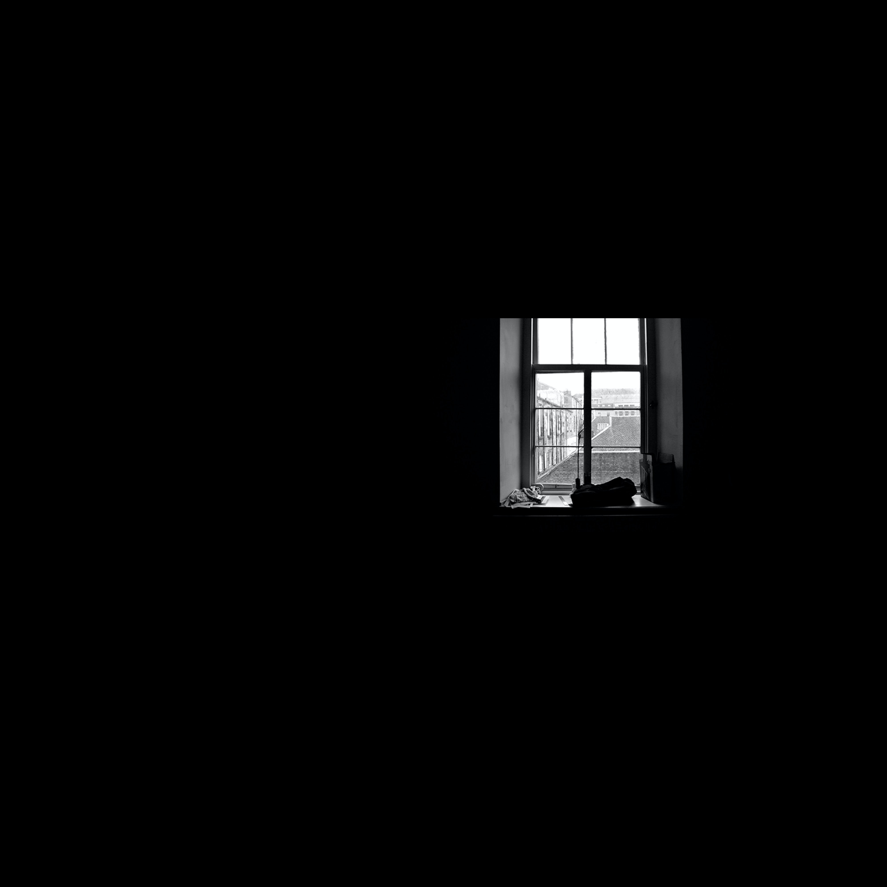

- HTML
- CSS
- JavaScript

간단함이 훌륭함의 열쇠다.-이소룡
승리하면 조금 배울 수 있고,패배하면 모든 것을 배울 수 있다.-크리스티 메튜슨
승자는 책임지는 태도로 살며,패자는 약속을 남발한다.-유태경전
말만 하고 행동하지 않는 사람은 잡초로 가득 찬 정원과 같다.-하우얼
내 자신의 무식을 아는 것은 지식에로의 첫걸음이다.-바이런
가시에 찔리지 않고서는 장미를 모을 수 없다.-핀페이
고통을 거치지 않고 얻은 승리는 영광이 아니다.-나폴레옹
기와한장 아껴서 대들보 썩는다.-한국속담
바람이 불지 않으면 노를 저어라.-윈스턴 처칠
강에서 물고기를 보고 탐내는 것보다 돌아가서 그물을 짜는 것이 옳다.-예악지
역경은 사람을 부유하게 하지는 않으나 지혜롭게 한다.-풀러
낭비한 시간에 대한 후회는 더 큰 시간 낭비이다.-메이슨 쿨리
들은 것은 잊어버리고,본 것은 기억하고 직접 해본 것은 이해한다.-공자
산을 움직이려 하는 이는 작은 돌을 들어내는 일로 시작한다.-공자